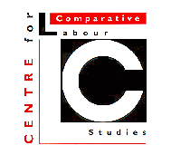
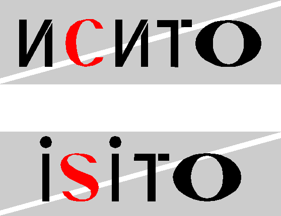

 |
Russian Research Programme |
 |
Publications are grouped broadly by theme. This list of Publications has been updated only to January 1997.
Simon Clarke, ed., Management and Industry in Russia: Formal and Informal Relations in the Period of Transition, Edward Elgar, Cheltenham, July 1995.
Simon Clarke, ed., The Russian Enterprise in Transition: Case Studies, Edward Elgar, Cheltenham, September 1996.
Simon Clarke, ed., Conflict and Change in the Russian Industrial Enterprise, Edward Elgar, Cheltenham, March 1996.
Simon Clarke, ed., Labour Relations in Transition: Wages, Employment and Industrial Conflict in Russia, Edward Elgar, Cheltenham, June 1996.
Simon Clarke, Peter Fairbrother, Michael Burawoy and Pavel Krotov, What about the Workers? Workers and the Transition to Capitalism in Russia, Verso, 0-86091-402-X, 0-86091-666-9 (pbk), London, 1993.
Simon Clarke, Peter Fairbrother and Vadim Borisov, The Workers' Movement in Russia, Edward Elgar, Cheltenham, 1995.
Restructurirovanie zanyatosti i razvitie rynkov truda v Rossii, ISITO, Moscow, July, 1996, 234 pp.
The Restructuring of Employment and the Formation of a Labour Market in Russia, ISITO Moscow and CCLS, Warwick, December 1996, 267pp.
| Simon Clarke, ed., Structural Adjustment Without Mass Unemployment? Lessons from Russia, Edward Elgar, Cheltenham, November 1997, 343pp. |
Simon Clarke, Pochemu Krizis porazil sovietskuyu sistemu?, Ezhegodnik Sotsiologicheskie Ocherki, 2, Moscow, 1992.
Vadim Borisov, The Fall of Russia's Exchange and Mart, Guardian, June, London, 13.06.1992.
Simon Clarke, Popular attitudes to the transition to a market economy in the Soviet Union on the eve of Reform, Sociological Review, 41, 4, Keele, 1993, pp 619-52.
Vadim Borisov, The Name Game, New Statesman, 19 March, London, 1993.
Petr Bizyukov, The Social and Political Situation in the Kuzbass, Labour Focus on Eastern Europe, 47, Oxford, 1994, pp. 31-6.
Vadim Borisov and Irina Kozina, Sotsial'naya spravedlivost' i prava cheloveka v massovom soznanii, in Rossiiskoe soznanie: Psykhologiya, fenomenologia, kul'tura, SamGPU, Samara, 1994, pp. 246-262.
Vadim Borisov, Sotsial'naya mobil'nost' v Sovetskoi Rossii, Sotsiologicheskie issledovaniya, 4, 1994, pp. 114-7.
Vadim Borisov, Tri provala v pustotu, Nezavissimaya Gazetta, 31.03.1994
Kiblitskaya, M., 'Russkii chastnyi biznes: vzglyad iznutri', Rubezh, 10-11, 1997.
Yaroshenko, S. ,'Teoreticheskie modeli bednosti', Rubezh, 8-9, 1996, 124-140.
Kozina, I., 'Case Study: nekotorye metodicheskie voprosi', Rubezh, 10-11, 1997, pp. 177-189.
Simon Clarke and Peter Fairbrother, The Workers' Movement in Russia, Capital and Class, 49, London, 1992, pp 7-17.
Vadim Borisov, Samoorganizatsiya rabochego dvizheniya, Sotsiologicheskie issledovaniya, 2, 1993, pp. 42-4.
Simon Clarke, Peter Fairbrother, Michael Burawoy and Pavel Krotov, What about the Workers? Workers and the Transition to Capitalism in Russia, Verso, 0-86091-402-X, 0-86091-666-9 (pbk), London, 1993.
Simon Clarke, Trade Unions, Industrial Relations and Politics in Russia, Journal of Communist Studies, 9, 4, London, 1993, pp 133-160.
Simon Clarke, Trade Unions, Industrial Relations and Politics in Russia, Martin Myint and Paul Lewis (eds): Parties, Trade Unions and Society in East-Central Europe, Frank Cass, London, 1994.
Vadim Borisov, Peter Fairbrother and Simon Clarke, Is There Room for an Independent Trade Unionism in Russia? The Case of the Federation of Air Traffic Controllers' Unions, British Journal of Industrial Relations, London, 1994.
Vadim Borisov, Simon Clarke and Peter Fairbrother, Does Trade Unionism have a Future in Russia?, Industrial Relations Journal, 25, 1, Glasgow, 1994, pp. 15-25.
Simon Clarke, Peter Fairbrother and Vadim Borisov, The New Workers' Movement in Russia, Critique, 26, Glasgow, 1994, pp. 55-68.
Simon Clarke and Vadim Borisov, Reform and Revolution in the Communist National Park, Capital and Class, London, 1994, pp. 9-13.
Simon Clarke, The Politics of Labour and Capital, S. White, A. Pravda and Z. Gitelman (eds): Developments in Russian and Post-Soviet Politics, Macmillan, Harmondsworth, 1994.
Vladimir Ilyin, Russian trade unions and the management apparatus in the transition period, in Conflict and Change in the Russian Industrial Enterprise
Irina Tartakovskaya, The trade union Solidarity: A case study, in Conflict and Change in the Russian Industrial Enterprise
Vadim Borisov, Komu Plachem?, EKO, 11, Novosibirsk, 1994, pp. 85-103.
Galina Monousova and Veronika Kabalina, A Record of Labour Action Starting from 12 June 1991, Economics and Industrial Democracy, 14, Stockholm, 1993, pp. 133-41.
Galina Monousova, Attitude a l'egard des syndicats dans les enterprises de l'industrie: les realites de la transition, Les Syndicats en Russie: Problemes politiques et sociaux, serie Russie, 724, 25 mars, Paris, 1994, pp. 33-4.
Leonid Gordon, Veronika Kabalina and Alla Nazimova, Sotsial'no-trudovye konflicty pri perekhode k rynochnoi economike, Obshchestvo i Ekonomika, 2, Moscow, 1993, pp. 3-19.
Galina Monousova, Profsoyuzy na promyshlennykh predpriyatiyakh: realii perekhodnogo perioda, Profsoyuzy v Rossii, June-July, Moscow, 1994.
V.A. Borisov, Donbass, 7-20 iyunya 1993 goda: zabastovka kak forma aktivnosti trudyashchikhsya v period provedeniya ekonomicheskikh reform. (Opyt vklyuchennogo nablyudeniya), Rabochee dvizhenie i politika reform, 6-6, 1994, pp. 66-87.
Sarah Ashwin, "Trade Unions after the Fall of Communism in Eastern Europe and Russia", Journal of Area Studies, 5, 1994.
Sarah Ashwin, "Russia's Official Trade Unions: Renewal or Redundancy?", Industrial Relations Journal, 1995.
Monousova G., Trade unions in industrial enterprises: transformation or conservation?" in: 'The Trade Union Movement: Tendencies and Problems in the Transitional Period', Moscow: IMEMO RAS, 1995.
Monousova G. "Propensity to Strike in Russia: Why is it so Subtle?" , Russian Economic Barometer, 1995, N 5 (with V.Gimpelson).
Simon Clarke, Peter Fairbrother and Vadim Borisov, The Workers' Movement in Russia, Edward Elgar, Cheltenham, 1995.
Simon Clarke (ed), The Russian Enterprise in Transition: Case Studies, Edward Elgar, Cheltenham, 1996.
Sergei Alashaev, On a Particular Kind of Love and the Specificity of Soviet Production, in Management and Industry in Russia.
Marina Kiblitskaya, We Didn't Make the Plan, in Management and Industry in Russia.
Pasha Romanov, Middle Management in Industrial Production in the Transition to the Market, in Management and Industry in Russia.
Marina Ilyina, Foremen: An ethnographic study, in Labour in Transition.
Sergei Alasheev and Marina Kiblitskaya, How to live on a Russian's wage, in Labour in Transition.
Valentina Vedeneeva, Promyshlenye predpriyatiya v perekhodnyi period - case study, Working Papers of Stockholm Institute of East European Economics, Stockholm, 1994,
Simon Clarke: "Management Strategies in the Russian Enterprise: Towards a Micro-economics of Transition".ms.
Elena Varshavskaya, Osobennosti radikal'no-ekonomicheskoi upravlencheskoi strategii, in Problemi reformirovaniya regional'noi ekonomiki, Kemerovo, 1994.
Elena Varshavskaya, 'Pionery' privatisatsii: kto i kak?, Studenty i molodye uchenye Kemerovskogo gosudarstvennogo universiteta, volume 2, Kemerovo, 1994.
Veronika Kabalina, ed., Proizvodstvennye otnosheniya i perestroika upravleniya na predpriyatiyakh Rossii, IMEMO, Moscow 1995.
Simon Clarke, The Restructuring of industrial enterprises in Russia after five years of reform, Russian and Commonwealth Business Law Report, December 1996
Alasheev S.Yu., Tartakovskaya I.N., Lapshova E.M. ,'Podshipnikovyi zavod "Kol'tso": konservatizm formal'nykh i neformal'nykh struktur', in Predpriyatie i rynok: dinamika upravleniya i trudovykh otnoshenii v perekhodnyi period, Veronika Kabalina ed., Moscow, ROSSPEN, 1997, pp. 114-144.
Romanov P., 'Trudovye otnosheniya i voprosy ekonomicheskoi reformy', 4M. N 7, pp. 201-205.
Kabalina, V.I.,'Transformatsiya predpriyatii: issledovatel'skie podkhody i resul'taty', in Predpriyatie i rynok: dinamka upravleniya i trudovykh otnoshenii.
Kabalina, V.I. , G. A. Monousova and V.T Vedeneeva, ,'Aktsionernoe obshchestvo `Lenkon': organizatsionnye innovatsii i trudovye otnosheniya na rabochem meste', in Predpriyatie i rynok: dinamka upravleniya i trudovykh otnoshenii.
Kabalina, V. and S. Clarke, ,'Politika privatisatsii i bor'ba za komtrol' nad predpriyatiem v Rossii', Rubezh, 8-9, 1996, pp. 60-97.
Kabalina, V.I. ed. Predpriyatie i rynok: dynamika upravleniya i trudovykh otnoshenii v perekhodnyi period. Moscow. ROSSPEN, 1997.
Kozina I., Metalina T., Romanov P., 'Zavod Prokat na puti k rynku' in Proizvodstvennye otnosheniya i perestroika upravleniya na predpriyatiyakh Rossii, V.Kabalina, ed.. Moskva: Institut mirovoi ekonomiki. 1996.
Varshavskaya, Lena and Inna Donova ,'Firma "Plastmassa": vozmozhen li kapitalizm na otdel'no vzyatom predpriyatii?' in Predpriyatie i rynok: dinamika upravleniya i trudovykh otnoshenii v perekhodnyi period, Veronika Kabalina ed., Moscow, ROSSPEN, 1997, pp. 222-286.
Simon Clarke (ed), Management and Industry in Russia: Formal and Informal Relations in the Period of Transition, Edward Elgar, Cheltenham, September 1995.
Simon Clarke, Informal Relations in the Soviet System of Production, in Management and Industry in Russia.
Sergei Alashaev, Informal Relations in the Process of Production, in Management and Industry in Russia.
S. Yu. Alasheev, Neformal'nye otnosheniya v protsesse proizvodstva: 'vzglyad iznutri', Sotsiologicheskie issledovaniya, 2, 1995, pp. 12-19.
Petr Bizyukov, The Mechanism of Paternalistic Management of the Enterprise:the Limits of Paternalism, in Management and Industry in Russia.
Samara Research Group, Paternalism: Our Understanding, in Management and Industry in Russia.
Simon Clarke and Peter Fairbrother, The Emergence of Industrial Relations in the Workplace, Richard Hyman and Anthony Ferner (eds) New Frontiers in European Industrial Relations, Blackwell, Oxford, 1994.
Veronika Kabalina and Victor Komarovsky, Transformation of Industrial Relations and Trade Union Reform in Russia, Moscow, 1992.
Veronika Kabalina, Kollektivnie dogovori i deyatelnost' profsoyuzov nd predpriyatiyakh, Moscow, 1993.
Simon Clarke (ed), Conflict and Change in the Russian Industrial Enterprise, Edward Elgar, Cheltenham, 1996.
Simon Clarke, Conflict and change in the Russian industrial enterprise, in Conflict and Change in the Russian Industrial Enterprise
V. Kabalina, et al., Kollektyvnye dogovory i deyatel'nost' profsoyuzov na predpriyatii, in Profsoyuznoe dvizhenie: tendentsii i problemy perekhodnogo perioda, IMEMO, RAN, Moscow, 1995.
Vladimir Ilyin, Social contradictions and conflicts in Russian state enterprises in the transition period, in Conflict and Change in the Russian Industrial Enterprise
Simon Clarke, Privatisation and the Development of Capitalism in Russia, New Left Review, 196, November/December, London, 1992, pp 3-27.
Simon Clarke and Petr Biziukov, Privatisation in Russia: The Road to a People's Capitalism?, Monthly Review, 44, 6, New York, 1992, pp. 38-45.
Veronika Kabalina and Alla Nazimova, Privatisation through Labour Conflicts the Case of Russia, Economic and Industrial Democracy, 14, Stockholm, 1993, pp 9-28.
Simon Clarke, Peter Fairbrother Vadim Borisov and Petr Bizyukov, The Privatisation of Industrial Enterprises in Russia:Four Case Studies, Europe-Asia Studies, 46, 2, Glasgow, 1994, pp 179-214.
Vadim Borisov, A Very Soviet Privatisation, Labour Focus on Eastern Europe, 47, Oxford, 1994, pp. 37-41.
Pavel Romanov, The regional elite in the epoch of bankruptcy, in Conflict and Change in the Russian Industrial Enterprise
Veronika Kabalina, Privatisation and restructuring of enterprises: under insider or outsider control? in Conflict and Change in the Russian Industrial Enterprise.
V. Kabalina, Privatisation and Control of the Enterprise, Mirovaya ekonomika i mezhdunarodnye otnosheniya, 1995
Simon Clarke and Veronika Kabalina: "Privatisation and the Struggle for Control of the Enterprise in Russia", in David Lane (ed), Russia in Transition, Longman, 1995.
Valentina Vedeneeva, Payment Systems and the Restructuring of Production Relations in Russia - A Case Study, in Management and Industry in Russia.
Simon Clarke, Wages, employment and industrial conflict in Russian industrial enterprises, in Labour in Transition
Inna Donova, Wage systems in pioneers of privatisation, in Labour in Transition.
Valentina Vedeneeva and Inna Donova, Kto, skol'ko i komu platit na privatizirovannom predpriyatii, Sotsis, 2, 1995.
Inna Donova, Politika privatisirovannykh predpriyatii v sfere oplaty truda, Studenty i molodye uchenye Kemerovskogo gosudarstvennogo universiteta, volume 2, Kemerovo, 1994.
Simon Clarke, Vadim Borisov and Peter Fairbrother, The Workers' Movement in Russia, Edward Elgar, Cheltenham, 1995, 431 pp (The first half of the book is on Kuzbass).
Inna Donova, "A Miners' Town: From the Problem of Employment to the Problems of Personnel Management", in Simon Clarke, ed., Labour Relations in Transition, Edward Elgar, Cheltenham, 1996.
Petr Bizyukov, "Underground Miners' Strikes", in Simon Clarke, ed., Labour Relations in Transition, Edward Elgar, Cheltenham, 1996.
Petr V. Bizyukov, The social-political situation in Kuzbass, Labour Focus on Eastern Europe, 47, spring 1994.
Sarah Ashwin 'Russia's Official Trade Unions: Renewal or Redundancy?' Industrial Relations Journal 26, 3, 1995, pp. 192-203
Sarah Ashwin '"There's No Joy Any More": The Experience of Reform in a Kuzbass Mining Settlement' Europe-Asia Studies, 47, 8, 1995, pp. 1267-1381.
Sarah Ashwin 'Forms of Collectivity in a Non-Monetary Society' Sociology, 30, 1, Feb. 1996, pp. 21-39.
Sarah Ashwin 'Shop Floor Trade Unionism in Russia: The Prospects of Reform From Below', Work, Employment and Society, in press
Sarah Ashwin 'Redefining the Collective: Russian Mineworkers in Transition' in Michael Burawoy and Katherin Verdery, eds, Ethnographies of Transition, in press.
Simon Clarke and Vadim Borisov. Reform and Revolution in the Communist National Park. Capital and Class, 53, Summer 1994, London.
Simon Clarke, "The Global Economy and the Restructuring of the Russian Coal Mining Industry", in Robert Brenner, ed., Global Economic Disorder, forthcoming.
Vadim A. Borisov, "The strike as a form of worker activism in the period of economic reform." in Simon Clarke, ed., Labour Relations in Transition, Edward Elgar, Cheltenham, 1996.
Vadim Borisov, Veronika Bizyukova and Konstantin Burnyshev, "Conflict in a Coal-Mining Enterprise: A Case Study of Sudzhenskaya Mine", in Simon Clarke, ed., Labour Relations in Transition, Edward Elgar, Cheltenham, 1996.
Vladimir Ilyin, "Russian trade unions and the management apparatus in the transition period" , in Simon Clarke, ed. Conflict and Change in the Russian Industrial Enterprise, Edward Elgar, Cheltenham, 1996.
Vladimir Ilyin, "Social contradictions and conflicts in Russian state enterprises in the transition period", in Simon Clarke, ed. Conflict and Change in the Russian Industrial Enterprise, Edward Elgar, Cheltenham, 1996.
Vladimir Ilyin, A City-Concentration Camp: The Social Stratification of the Vorkuta GULAG (1930s - 1950s), International Review of Social History (forthcoming).
Peter Fairbrother and Vladimir Ilyin, `Where Are Miners' Unions Going? Trade Unions in Vorkuta, Russia', Industrial Relations Journal, 27, 4, December 1996, pp. 304-316.
Vadim A. Borisov and Ayse Kudat, Russian Coal Sector Restructuring: Social Assessment, World Bank, ECA Country department 3: Infrastructure, Energy and Environment. Operations Division. World Bank, Washington, D.C., 1996.
Annette Robertson and Huw Beynon: The Experience of Change in the Coal Industry: UK, Russia and the World Bank, in Huw Beynon and Peter Fairbrother (eds) The Internationalisation of Capital: Labour's Response, Mansell, forthcoming.
Inna Donova and Valentina Vedeneeva, Kto, skol'ko i komu platit na privatizirovannom predpriyatii. Sotsiologicheskie issledovaniya, 1, 1995.
Olga N. Pulyaeva, Kak vyzhivat' shakhtam, Yuzhnyi Kuzbass, 6.9.1994, p. 2.
Olga N. Pulyaeva, Kak zakryvalis' shakhty v Anglii?, Yuzhnyi Kuzbass, 2.8.1994, p. 2.
Petr V.Bizyukov and Elena Ya. Varshavskaya, Istoria zakrytiya dvukh shakht v Kuzbasse, Russian American Fund, Moscow, 1994
Petr V. Bizyukov, Podzemnaya shakhterskaya zabastovka, Sotsiologicheskie issledovaniya, 10, 1995
Petr V.Bizyukov, Etot proekt - kak udar bitom, Argumenty i fakty v Kuzbasse, 13, 1994
Petr V.Bizyukov, Kazhdyi shestoi shakhter, Argumenty i fakty v Kuzbasse, 5, 1994
Petr V.Bizyukov, Shakhta Anzherskaya: Nikto po svoei vole ne uidet, Nasha gazeta, 2.4.94.
Petr V. Bizyukov, Zakrytie shakht budet stoit' Kuzbassu dorogo, Argumenty i fakty v Kuzbasse, 28, 1994
Petr V. Bizyukov, 'Podzemnaya shakhterskaya zabastovka'. Rabochaya politika. August 3 1996
Petr V. Bizyukov and Kostya Burnyshev,'Reformoi - Po Uglyu!' EKO, 2 1997.
Inna Donova, Mezhdu proshlym i budushchem, Novoe rabochee i profsoyuznoe dvizhenie, Rossiisko-Amerikanskogo Fonda profsoyuznogo razvitiya i obucheniya, 4, 1995.
Vadim A. Borisov, Chem zanyat'sya za Polyarnym krugom? (Nachalo zakrytiya shakht i problemy zanyatosti v Vorkute), Chelovek i trud, NN 7, 8, 1996.
Vadim A. Borisov, Gradushchie posledstviya global'nogo reformizma, Sotsiologicheskie issledovaniya, 2, 1995, pp. 80-87.
Vadim A. Borisov, Khal'mer-Yu: uroki zakrytiya, EKO, 2, 1996
Vadim A. Borisov, Na angliiskii maner, Na-gora! 33-4, 1994, p. 6.
Vadim A. Borisov, Ocherednoi etap protivostoyaniya shakhterov i pravitel'stva, Profsoyuznoe obozrenie, 2, 1995, pp. 25-9.
Vadim A. Borisov, Orientir - razval otrasli, Na-gora! 37-8, 1994, p. 3.
Vadim A. Borisov, Shakhtery v rabochem dvizhenii, Chelovek i trud, 2, 1996.
Vadim A. Borisov, V seifakh Vsemirnogo banka bol'she obeshchanii, chem dollarov, Rabochaya tribuna, 3.02.95, p. 4.
Vadim Borisov, I. Kozina, I. Krasilnikova, ,'Sotsial'nye aspekty restrukturizatsii ugol'noi promyshlennosti', Ekonomicheskie i sotsial'nye peremeny: monitoring obshchestvennogo mneniya, 2, 1997, pp. 33-5
Vadim Borisov, I. Kozina, I. Tartakovskaya, ,'Sotsial'no-ekonomicheskie aspekty reformirovaniya ugol'noi otrasli', Voprosy ekonomiki
Vadim Borisov, 'Shakhteri v rabochem dvizhenii', Chelovek i trud, 4, 1996, 76-79
Vadim Borisov,'Prikazhuyu - i utrep!' EKO, 1997, 1, 130-149
Vadim Borisov, ,'Chubaisa podderzhat ne shakhtery a ugol'shchiki', Nezavissimaya gazeta, 1.4,97.
Vadim Borisov, 'Chem zanyat'sya za Polyarnym krugom' Sotsiologicheskie issledovaniya, 1996, 10, 22-34
Vadim A. Borisov, Veronika Bizyukova, Konstantin Burnyshev, Gornyaki na rel'sakh (Chto zastavilo sudzhentsev perekryt' Transsib), Na-gora!, 1-2, 5-6, 7-8, 1995.
Vadim A. Borisov, Veronika Bizyukova, Konstantin Burnyshev, Konflikt na Ugledobyvayushem predpriyatii, Sotsiologicheskie issledovaniya, 3, 1995, pp. 57-68.
Vadim A. Borisov, Veronika Bizyukova, Konstantin Burnyshev, Petr Bizyukov, Inna Donova: Sotsial'no-ekonomicheskii konflikt v shakterskom gorode. Russian-American Fund for Trade Union Development and Education, February 1995.
Vadim A. Borisov, Tri provala v pustotu. Nezavissimaya Gazetta 31.03. 1994
Vadim A. Borisov, Politicheskie perspektivy glazami izbiratelei, Na-gora!, 37-8, September 1995, p. 2
Vadim A. Borisov, Kak zakryvayut shakhtu `promyshlennaya', Na-gora!, 41-42, October 1995, p. 4.
Vadim A. Borsivo, Shakhtery v rabochem dvizhenii, Na-gora!, 5-6, April 1996, p. 7.
Vadim A. Borisov, `Khalmer-Yu' - obraztsovo-kommunisticheskoe zakrytie, Na-gora!, 7-8, April 1996, p. 7.
Sarah Ashwin, Profsoyuzy Rossii: obnovlenie?, Na-gora!, 19-20, August 1996, p. 2.
Romanov P. Otnoshenie naseleniya k shakhterskomu zabastovochnomu dvizheniyu... // Tsennostnye orientatsii i sotsial'noe povedenie v izmenyayushchikhsya usloviyakh. Regional'nye aspekty. Samara: Samarskiji Fond sotsial'nykh issledovaniji. 1995. S.107-119.
Veronika Kabalina, Peter Fairbrother, Simon Clarke and Vadim Borisov, Privatisation and the Struggle for Control of the Enterprise in Russia., Paper for ESRC East West Programme Workshop on Privatisation, London, June 1994.
Peter Fairbrother and Vladimir Ilyin, "Trade Unionism in Vorkuta", 13th Annual International Labour Process Conference, Blackpool, April 1995
Simon Clarke and Peter Fairbrother, `The Restructuring of Employment in Russian Industrial Enterprises', Know-How Fund, ODA, London, October 1994.
Simon Clarke and Peter Fairbrother, The Restructuring of the Russian Coal-Mining Industry, Know-How Fund, ODA, London, July 1994.
Vladimir Ilyin, Restructuring Relations Between Management and Trade Unions, BASEES Conference, Cambridge, 26 March 1995
Simon Clarke, "The Miners and the Workers' Movement in Russia, University of California, Berkeley, April 1995.
Simon Clarke, "The Global Economy and the Restructuring of the Russian Coal Mining Industry", University of California, Los Angeles, April 1995
Simon Clarke , Ethnographies and the Dynamics of Transition, Ethnographies of Transition: The Political and Cultural Dimensions of Emergent Market Economies in Russia and Eastern Europe, Centre for Slavic and East European Studies, University of California, Berkeley, March 22-24 1996
Sarah Ashwin , Russian Women Mineworkers in Transition, Ethnographies of Transition: The Political and Cultural Dimensions of Emergent Market Economies in Russia and Eastern Europe, Centre for Slavic and East European Studies, University of California, Berkeley, March 22-24 1996
Simon Clarke, The Restructuring of industrial enterprises in Russia after five years of reform, Russian Economy in Transition, Bank of Finland, Helsinki, September 24 1996
Annette Robertson and Huw Beynon: The Experience of Change in the Coal Industry: UK, Russia and the World Bank, ESRC Labour Studies Seminar Series, Manchester, 9.12.95
Annette Robertson: Continuity and Change in Russian Labour Markets: Employment Restructuring in Mining Communities, International Conference on The Globalisation of Production and the Regulation of Labour, University of Warwick, 11-13 September 1996.
Masha Dobriakova, Tekhnicheskii progress i rabskii trud: Sotsial'no-pravovoi status rabotnika ugol'noi promyshlennosti Vorkuty v serednie 50-kh - serednie 60-kh gg., International Conference on Social Stratication: Historical and Contemporary Aspects, Syktyvkar, September 1996.
Olesya Luksha, Sotsialnyi status shakhterov Vorkuty v kiontse 80-kh godov, International Conference on Social Stratication: Historical and Contemporary Aspects, Syktyvkar, September 1996.
Robert Ferguson, The Dynamics of Crisis, Restructuring and Workers' Resistance in the Kuzbass Coal Basin, International Conference on The Globalisation of Production and the Regulation of Labour, University of Warwick, 11-13 September 1996.
Analys sotsial'no-demograficheskoi struktury shakhty Yagunovksaya. Kemerovo. 1994
Analiz sotsial'nykh posledstvii zakrytiya shakhty Cherkasovskaya (Avgust-sentyabr' 1994g.). Kemerovo 1994.
Sostoyanie sotsial'noi sfery na promyshlennykh predpriyatiyakh Kuzbassa. Kemerovo, 1994.
Sotsial'no-ekonomicheskaya situatsiya na shakhte im. Vakhrusheva. Kemerovo. 1994.
Izuchenie perspektiv zanyatosti shakhterov v gorode Anzhero-Sudzhenske. October 1994
Izmenenie sotsial'nykh otnoshenii na shakhte im. Vakhrusheva. Kemerovo. 1994.
Izuchenie sotsial'no-politicheskogo konflikta na shakhte Sudzhenskaya. 1994.
Konstantin Burnyshev and Olga Pulyaeva, Otnoshenie trudyashchikhsya k meram po vyzhivaniyu shakht (Sanatsii predpriyatii), Kuznetskugol' Information-Technical Centre, Novokuznetsk, 1994, 45pp.
Petr Bizyukov: Podzemnye zabastovki shakhterov: fenomenologiya, spetsifika, prichiny. Kemerovo January 1995.
Ugol'naya pomyshlennost' Kuzbassa: sotsial'naya situatsiya (oktyabr' 1994- mart 1995). Kemerovo. 1995.
Politicheskie orientatsii glazami izbiratelei. Kemerovo-Samara. 1995. (Research financed by Rosugleprof)
Analiticheskaya zapiska o zakrytii shakhty Promyshlennaya (Vorkuta) i ego sotsial'nykh posledstviyakh. Vorkuta, 1995.
Zhiteli shakhterskogo goroda i problemy restrukturisatsii ugol'noi promyshlennosti, October 1995, Moscow, Vorkuta., Kemerovo, 146 pp (Research financed by World Bank).
Shakhta Khal'mer-Yu: uroki zakrytiya. Vorkuta, 1995.
Shakhta im. Dimitrova: uroki zakrytiya. Kemerovo, 1995.
Shakhta Yuzhnaya: uroki zakrytiya. Kemerovo, 1995.
K istorii voprosa o pereselenii rabotnikov ob'edineniya Vorkutaugol' v yuzhnye raiony Rossii. Vorkuta, 1995.
Potentsial'nye vozmozhnosti trudoustroistva molodezhi goroda Prokop'evska. Kemerovo, 1995.
Ugol'naya promyshlennost' Kuzbassa v zerkale oblastnoi pressy. Kemerovo. 1995.
Otsenka khoda restrukturisatsii ugol'noi promyshlennosti v Kuzbasse. Kemerovo, 1995.
Vorkuta v sentyabre-noyabre 1995g. Vorkuta, 1995.
Zabastovochnyi komitet g. Mezhdurechenska: obrazovanie, deyatel'nost', pozitsiya. Kemerovo. 1995.
Monitoring zabastovok na shakhtakh Yuzhnaya i Promyshlennaya. Vorkuta. 1995.
Elektoral'noi aktivnosti i otnosheniya k shakhterskomu dvizheniyu po Samarskoi oblasti, Samara August 1995 (Research financed by Rosugleoprof).
Analiticheskii doklad: Sotsial'nye problemy ugol'noi promyshlennosti Kuzbassa v 1995 g. Kemerovo. 1995.
Teoreticheskie osnovy monitoringa sotsial'nykh protsessov v ugol'noi promishlennosti Rossii. Kemerovo, 1996, 133pp.
Shakhta im. Volkova: blagopoluchie segodyashego dnya. Kemerovo. 1996.
Kontantin Burnyshev and Olga Pulyaeva, Ugol'naya kompaniya v usloviyakh sokrashcheniya gospodderzhki, Kemerovo, 1996.
Sotsialn'ye aspekty restructurisatsii ugol'noi promyshlennosti (Social Aspects of the Restructuring of the Coal Industry). Moscow-Samara-Kemerovo, September 1966, 116pp. (Research financed by the World Bank under the coal SECAL).
Istoki sovremennoi systemy upravleniya ugol'noi promyshlennostyu v Kuzbasse, Kemerovo, 1996, 163pp.
Razrabotka mekhanizma sotsial'noi pomoshchi v voprosakh trudoustroistva shakhterov v sluchae ostanovka deyatel'nosti predpriyatiya (na primere shakhty im. Shevyakova g. Mezhdurechensk), ISITO Kemerovo, 1995, 110 pp (Research partly financed by Kuzbassinvestugol')
Irina Kozina and Vadim Borisov, The changing status of workers within the enterprise, in Conflict and Change in the Russian Industrial Enterprise
Irina Kozina, Changes in the social organisation of industrial enterprises, in Labour in Transition.
Veronika Kabalina and Tanya Metalina, Mozhno li izbezhat' Bezrabotnitsy, Novoe Rabochee i Profsoyuznoe Dvizhenie, 2, Moscow, 1994, pp. 65-77.
Veronika Kabalina and Tanya Metalina, Sotsial'nye mekhanismy politiki zanyatosti na rossiiskikh prepriyatiyakh v 1992-3gg, Mirovaya Ekonomika i Mezhdunarodnye Otnosheniya, 7, Moscow, 1994.
V.A. Borisov, I.M. Kozina, Ob izmenenii statusa rabochikh na predpriyatii, Sotsiologicheskie issledovaniya, 11, 1994, pp. 16-29.
Simon Clarke, ed., Labour in Transition: Wages, Employment and Labour Relations in Russian Industrial Enterprises, Edward Elgar, Cheltenham, 1996
Tanya Metallina, Employment policy in an industrial enterprise, in Labour in Transition.
Inna Donova, A miners' town: from the problem of employment to the problems of personnel management, in Labour in Transition
Irina Kozina, Izmeneniya sotsial'noi organizatsii promyshlennogo predpriyatiya, Sotsiologicheskie issledovaniya, 4, 1995.
Monousova G. "Interfirm mobility and Restructuring of Labour", Sotsiologicheskie Zhurnal, 4, 1995.
Structural Adjustment without Mass Unemployment? Lessons from Russia. 256 pp. CCLS, University of Warwick and ISITO, Moscow. November 1996.
Restruktyrovanie zanyatosti i razvitie rynkov truda v Rossii, 217 pp. ISITO. Moscow. November 1996.
Simon Clarke: The Restructuring of Employment and the Formation of a Labour Market in Russia: Final Report on ODA Economic and Social Research Project R6374, October 1996
Bizyukova V.A., Donova I.V. ,'Problemy izucheniya sotsial'nykh mekhanizmov formirovaniya rynka truda' Sovremennye problemy gumanitarnykh distsiplin. Sbornik statei molodykh uchenykh Kuzbassa. II. Kemerovo. Kuzbassvuzizdat, 1996.
Kozina I., 'Kak segodnya nakhodyat rabotu', Chelovek i trud. 1996. N 12. pp.33-35.
Kozina I., Kabalina V., Donova I., 'Restrukturirovanie zanyatosti na predpriyatiyakh i razvitie rynka truda v Rossii'. Obshchestvo i ekonomika. 1996, N 12, pp.112-142.
Varshavskaya, Lena ,'Samoregulirovanie zanyatosti', Ekonomika i zhizn',1996, oktyabr', 43.
Lena Lapshova and Irina Tartakovskaya, The Position of Women in Production, in Management and Industry in Russia.
Galina Monousova, Gender differentiation and industrial relations, in Conflict and Change in the Russian Industrial Enterprise
Elain Bowers, Gender stereotyping and the gender division of labour in Russia, in The Restructuring of Wages and Employment.
Irina Aristarkhova: "Controlling Women, Controlling Men": Popular Conceptions of Gender Relations in the Middle Ages in England and Russia, Working Paper 6, Centre for Comparative Labour Studies, University of Warwick, 1995
Irina Aristarkhova: Women and Government in Bolshevik Russia, Working Paper 3, Centre for Comparative Labour Studies, University of Warwick, 1995.
Irina Tartakovskaya, Women's Careers in Industry, in Hilary Pilkington, ed. Gender, Generation and Identity in Contemporary Russia. London, Routledge, 1996.
Sarah Ashwin and Elain Bowers, Do Russian Women Want to Work? in Mary Buckley, ed., Cambridge University Press, 1997.
Galina Monousova `How Vulnerable is Women's Employment in Russia?' in Simon Clarke, ed., Structural Adjustment without Mass Unemployment? Lessons from Russia, Edward Elgar, Cheltenham, 1997.
Alasheev S. Vospriyatie tsveta v massovom soznanii // Rossijiskoe soznanie: psikhologiya, fenomenologiya, kul'tura. Samara: Samarskiji gosudarstvennyji peduniversitet, 1994. S.284 -286.
Alasheev S.Yu., Tartakovskaya I.N. Ideologicheskie stereotipy i osobennosti elektoral'nykh predpochteniji // Tsennostnye orientatsii i sotsial'noe povedenie v izmenyayushchikhsya usloviyakh. Regional'nye aspekty. Samara: Samarskiji Fond sotsial'nykh issledovaniji. 1995. S.65-78.
Alasheev, S. Yu., Metody izucheniya TV-zriteleji //Issledovaniya. Informatsionnyji vestnik STs SGPI i ISITO. Samara.1995. u 2. S.2-4.
Alasheev S. Zritel'skie predpochteniya // Issledovaniya, Informatsionnyji vestnik STs SGPI i ISITO. Samara.1995. u2.
Alasheev S., Metalina T. Bankovskie uslugi Samary //"Issledovaniya", Informatsionnyji vestnik STs SGPI i ISITO, Samara, 2, 1995.
Alasheev S.Yu., 'Natsional'nye otnosheniya v shkol'noi srede i kul'tura detstva', Samarskaya oblast' (etnos i kul'tura). Informatsionnyi vestnik IYeKA "Povolzh'e". 1996. 1, p. 18.
Alasheev S., 'Shkola v protsesse formirovaniya natsional'nogo soznaniya', Samarskaya oblast'. Yetnos i kul'tura : Informatsionnyi vestnik, 1996, N2, pp.14-16.
Alasheev S.Yu., Tartakovskaya I.N. , 'Ideologicheskie stereotipy izbiratelei v Samare', Sotsiologicheskii zhurnal. 1996 N1/2, pp.182-190.
Kozina I., Adel'son A., Alasheev S., Pindyurin M. Professional'nye orientatsii vypusknikov sredneji shkoly i zadachi optimizatsii sotsial'nogo planirovaniya // Problemy sovershenstvovaniya sotsial'nogo planirovaniya. Kujibyshev, 1989.
Kozina I. Metodicheskie problemy issledovaniya massovogo soznaniya //Sotsiologicheskie esse. t.2, Moskva, 1992.
Kozina I Sotsial'naya spravedlivost' i prava cheloveka v massovom soznanii: teoriya i metody issledovaniya //Rossijiskoe soznanie: psikhologiya, fenomenologiya, kul'tura. Samara: Samarskiji gosudarstvennyji peduniversitet, 1994.
Kozina I. Natsional'naya, gosudarstvennaya i sotsial'naya identifikatsiya sovetskikh nemtsev // /Rossijiskoe soznanie: psikhologiya, fenomenologiya, kul'tura. Samara: Samarskiji gosudarstvennyji peduniversitet, 1994.
Romanov P. Opyt organizatsii shkol i seti anketerov-interv'yuerov... // 3-ya Vsesoyuznoji sotsiologicheskaya konferentsii "Metody sotsiologicheskikh issledovaniji", 3 dekabrya 1989 g.: Tez. dokl. / Institut sotsiologii AN SSSR. M.: IS AN , 1989. S.16-18.
Romanov P., "Samara v ... (yanvare-fevrale, marte, mae-iyune i dr.)" // pod red. V.Gel'mana, vypuski "Monitora" IGPI, Moskva, 1993.
Romanov P., 'Natsional'naya ideya: sotsiologicheskii aspekt', Samarskaya oblast' (Yetnos i kul'tura), informatsionnyi vestnik IYeKA "Povolzh'e", Samara, 1-1996, p.21.
Ispol'zovanie opyta domov-kommun v sotsial'nom proektirovanii MZhK //Metodologiya sotsial'nogo proektirovaniya MZhK . Mezhvuzovskiji sbornik nauchnykh trudov., Samara: Samarskiji gosudarstvennyji pedagogicheskiji institut. 1990. S. 20-27.
Reprintseva E., Rusina O. Problemy sotsial'noji adaptatsii migrantov //Samarskaya oblast' (etnos i kul'tura), informatsionnyji vestnik IYeKA "Povolzh'e", 1-1996, s.16.
Reprintseva E.G. Zhiznennye orientatsii i sotsialnoe samochuvstvie molodezhi (po dannym oprosa "Puti pokoleniji" v Samare) // Mezhdunarodnaya nauchnaya konferentsiya "Sotsial'noe znanie: formatsii i transformatsii" 13 fevralya 1996 g.: Tez.dokl. / Kazanskiji gosudarstvennyji universitet. Kazan': KGU, 1996. S.33.
Romanov P. Natsional'naya ideya: sotsiologicheskiji aspekt // Samarskaya oblast' (etnos i kul'tura), informatsionnyji vestnik IYeKA "Povolzh'e", Samara, 1-1996, s.21.
Romanov P. Kanaly politicheskoji propagandy // Issledovaniya, Informatsionnyji vestnik STs SGPI i ISITO. Samara.1995. u2.
Tartakovskaya I. Nekotorye subektivnye faktory professional'noji napravlennosti studentov // Sotsial'naya aktivnost' molodezhi. M.: ISI AN SSSR, 1984.
Tartakovskaya I. Analiz professional'noji napravlennosti studentov universiteta // Nauchnyji progress i sotsial'nye problemy. Kujibyshev: Nauchno-tekhnicheskoe obshchestvo. 1986.
Tartakovskaya I. K voprosu ob issledovanii "dukhovnykh zaprosov" // Aktual'nye problemy sotsial'nogo razvitiya i zadachi sotsiologii. Riga: Institut filosofii, sotsiologii i prava. 1989.
Tartakovskaya I. Chtenie i massovaya kommunikatsiya v sisteme predpochteniji sel'skoji molodezhi // Rossijiskoe soznanie: psikhologiya, fenomenologiya, kul'tura. Samara: Samarskiji gosudarstvennyji peduniversitet, 1994..
Tartakovskaya I. Fenomen bestsellerov i traditsiya ego izucheniya v angloyazychnoji sotsiologii// Sotsiologicheskiji zhurnal, 1994. u 1.
Tartakovskaya I. Naselenie Samary: sotsial'no-demograficheskiji ocherk. Samara: Samarskiji fond sotsial'nykh issledoaniji. 1995.
Tartakovskaya I. Issledovaniya, Informatsionnyji vestnik STs SGPI i ISITO. Samara.1995. u1. S.2-4.
Tartakovskaya I. Izbirateli Samary v avguste //"Issledovaniya", Informatsionnyji vestnik STs SGPI i ISITO, Samara, 1-1995, s.4-7.
Tartakovskaya I. Politika i zhiteli Otradnogo //"Issledovaniya", Informatsionnyji vestnik STs SGPI i ISITO, Samara, 1-1995, s.7-11.
Tartakovskaya I. Politicheskie partii Samary // Samarskaya oblast'. Samara: Samarskiji gosudarstvennyji universitet. 1996.
Peter Fairbrother: "Workplace Unionism in Britain: Implications for Russia" . Tyumen Oil Workers' Trade Union. Northern College, Barnsley, October 1992.
Peter Fairbrother: "Restructuring and Trade Unionism in Russia". Third Central and East European Symposium, Ruskin College, Oxford, November 1992.
Peter Fairbrother: "The Emergence of Trade Unionism in Russia?" Northern College, Barnsley, March 1993.
Vadim Borisov, Peter Fairbrother, Simon Clarke: "Is There Room for an Independent Union in Russia: The Case of the Federation of Air Traffic Controllers' Unions", 11th International Labour Process Conference, Blackpool, April 1993.
Simon Clarke: "The Restructuring of the Soviet Industrial Enterprise". University of Kent, October 1992.
Simon Clarke: "The Workers' Movement and the Transition to the Market Economy in Russia", Association for Economic and Social Analysis Conference, `The New World Order', Amherst, Mass. November 1992.
Simon Clarke: "Russian Workers in the Face of Privatisation", University of Essex, November 1992.
Simon Clarke: "The New Workers' Movement in Russia", University of Glasgow, December 1992.
Simon Clarke: "The Restructuring of Management and Industrial Relations in Russia", Glasgow Polytechnic, December 1992.
Simon Clarke: "Trade Unions in the Former USSR", ESRC East-West Initiative Conference `Political Parties, Society and Trade Unions in the Transition to Democratic Politics', Budapest, Hungary, March 1992.
Simon Clarke: "Management Strategies in the Transition to the Market Economy in Russia", ESRC East-West Initiative Team Leaders Meeting, London, June 11th 1993.
Simon Clarke: "What About the Workers", CSE Conference, University of Leeds, July 1993.
Vadim Borisov and Simon Clarke: "Reform and Revolution in the Communist National Park", CSE Conference, University of Leeds, July 1993.
Simon Clarke, Peter Fairbrother, et al.: "Post-Communism and the Emergence of Industrial Relations in the Workplace", East-West Programme Seminar, "The Enterprise in Post-Communist Societies", London, November 1993.
Simon Clarke and Vadim Borisov: "Privatisation and the Struggle for Control of the Enterprise", CREES, University of Birmingham, January 1994.
Simon Clarke: "Privatisation in Russia: A Case Study", London Business School, Middle Europe Centre Seminar, February 1994.
Marina Kiblitskaya: "We Didn't Make the Plan", 12th Annual International Labour Process Conference, Aston, March 1994.
Lena Lapshova and Irina Tartakovskaya: "Women in Production and Informal Relations in Russian Factories", 12th Annual International Labour Process Conference, Aston, March 1994
Simon Clarke, Petr Bizyukov and Vadim Borisov: "Strikes in Russia", 12th Annual International Labour Process Conference, Aston, March 1994
Pavel Romanov: "Contradictions and Conflict Among Middle Management in Russia", 12th Annual International Labour Process Conference, Aston, March 1994
Peter Fairbrother: "Local Trade Unionism and the Russian Enterprise", 12th Annual International Labour Process Conference, Aston, March 1994
Lena Lapshova and Irina Tartakovskaya: "The Changing Position of Women in the Soviet System of Production", BASEES Conference, Cambridge, March 1994
Pavel Romanov: "The Changing Role of Middle Management", BASEES Conference, Cambridge, March 1994
Simon Clarke: "The Politics of Privatisation in Russia", BASEES Conference, Cambridge, March 1994
Veronika Kabalina Vadim Borisov Simon Clarke and Peter Fairbrother: "Privatisation and the Struggle for Control of the Enterprise in Russia", ESRC East-West Programme Workshop on Privatisation, London, June 1994.
Veronika Kabalina and Galina Monousova, Kollektivnye dogovory i deyatel'nost' profsoyuzov na predpriyatiyakh, Report to Ministry of Labour, Moscow, 1993.
Veronika Kabalina Galina Monousova and Valentina Vedeneeva, Osnovye faktory sotsialnoi napryazhenosti na promyshlennom predpriyatii, Report to Ministry of Labour, Moscow, 1993.
Veronika Kabalina, Strategii zanyatosti na mikrourovne, Report to Ministry of Labour, Moscow, 1993.
Valentina Vedeneeva, Zarabotnaya plata kak element novoi strategii upravleniya, Institute of World Economy and International Relations, Russian Academy of Sciences, Moscow, March 1993
Veronika Kabalina, Perestroika upravleniya i trudovykh otnoshenii na Movene: promezhutochnye itogi case study, Institute of World Economy and International Relations, Russian Academy of Sciences, Moscow, March 1993
Veronika Kabalina, Metodicheskie i metodologicheskie vorposi provedeniya case study na promyshlennom predpriyatii, Institute of World Economy and International Relations, Russian Academy of Sciences, Moscow, September 1993
Veronika Kabalina, Politika zanyatosti na rossiiskikh predpriyatiyakh v 1992-3gg., Institute of World Economy and International Relations, Russian Academy of Sciences, Moscow, January 1994
Galina Monousova, Profsoyuzy na promyshlennykh predpriyatiyakh, Institute of World Economy and International Relations, Russian Academy of Sciences, Moscow, December 1993
Valentina Vedeneeva, Social aspects of Russian industrial enterprises in the transition period, Stockholm Institute of East European Economics, Stockholm, November 1993
Veronika Kabalina, Ob'ekty i sub'ekty sotsial'no-trudovykh konfliktov na predpriyatii, Social Democratic Discussion Forum, Moscow, December 1992
Veronika Kabalina, Mekhanismy regulirovaniya zanyatosti na predpriyatiyakh pri perekhode k rynochnoi ekonomike, Social Democratic Discussion Forum, Moscow, December 1993.
Irina Tartakovskaya, Peter Fairbrother, Petr Bizyukov, Vladimir Ilyin and Simon Clarke, The Post-Communist Enterprise and Social Policy, European Forum for Democracy and Solidarity, Moscow, 14 May 1994
Simon Clarke and Peter Fairbrother, The Restructuring of Enterprise Management and Industrial Relations in Russia, XIIIth World Congress of Sociology, Bielefeld, Germany, 19th July 1994
Simon Clarke and Veronika Kabalina, The Workers' Movement in Russia, XIIIth World Congress of Sociology, Bielefeld, Germany, 19th July 1994.
Peter Fairbrother and Vadim Borisov, Trade Unionism in the Russian Aviation Industry, XIIIth World Congress of Sociology, Bielefeld, Germany, 19th July 1994.
Simon Clarke and Peter Fairbrother, The Restructuring of the Russian Coal-Mining Industry, Know-How Fund Seminar, ODA, London, July 1994.
Simon Clarke and Peter Fairbrother, `The Restructuring of Employment in Russian Industrial Enterprises', Know-How Fund Seminar, ODA, London, October 1994.
Simon Clarke and Veronika Kabalina, Privatisation and the Struggle for the Control of the Enterprise in Russia, Russia in Transition: Elites, Classes and Inequalities, Cambridge, 15th-16th December 1994
Pavel Romanov, The Regional Elite in the Epoch of Bankruptcy, BASEES Conference, Cambridge, 26 March 1995
Veronika Kabalina, Privatisation and Restructuring of Enterprises: Under `Insider' or `Outsider' Control? BASEES Conference, Cambridge, 26 March 1995
Vladimir Ilyin, Restructuring Relations Between Management and Trade Unions, BASEES Conference, Cambridge, 26 March 1995
Elain Bowers, Gender Stereotyping and Work, BASEES Conference, Cambridge, 26 March 1995
Irina Tartakovskaya, Women's Careers in Industry, BASEES Conference, Cambridge, 26 March 1995
Irina Aristarkhova, Sex and Gender in Russia, BASEES Conference, Cambridge, 26 March 1995
Peter Fairbrother and Vladimir Ilyin, "Trade Unionism in Vorkuta", 13th Annual International Labour Process Conference, Blackpool, April 1995
Simon Clarke, "The Restructuring of the Russian Coal Mining Industry", University of California, Los Angeles, April 1995.
Simon Clarke, "The Workers' Movement and the Miners in Russia, University of California, Berkeley, April 1995.
Simon Clarke, "Researching the Russian Industrial Enterprise", Stanford University, California, April 1995.
Monoussova G. "Gender and industrial relations" (methodological seminar, IMEMO, September 1994)
Kabalina V. "Privatisation and control of an Enterprise in Russia" " (methodological seminar, IMEMO, December 1994)
Kabalina V. "Alternative forms of corporate governance and restructuring of enterprises (two case studies)", (methodological seminar, IMEMO, February 1995)
Veronika Kabalina, Employment Restructuring and Labour Turnover in the Enterprise
Galina Monusova, Intra-firm mobility and differentiation of labour at industrial enterprises
Inna Donova, Models of behaviour in the secondary labour market
Irina Kozina, Employment opportunities and changes in personal employment strategies
Sergei Alasheev, On the question of the structure of the labour market
Tanya Metalina and Ira Tartakovskaya, Women in the Labour Market: Gender as a factor in labour biographies and individual strategies in the sphere of employment
Marina Karelina, Employment strategy of a commercial firm facing high potential labour mobility
Pavel Romanov, `Young and inexperienced, but also old experienced personnel...' Towards a taxonomy of labour power in the labour market.
Olga Pulyaeva, Employment in the Informal Sector
Petr Bizyukov, The possibilities of the emergence of mass unemployment in Russia.
Veronika Bizyukova, Features of the personnel situation of advanced enterprises
Elena Varshavskaya, Secondary Employment of Employees in Industrial Enterprises
Kostya Burnishev, Individual Employment Strategies of Workers in a Mining Town
Inna Donova,
Vladimir Ilyin, Models of Social Mobility of Soviet Directors during the Late Soviet and Post-Soviet Periods (1986 -1996)
Marina Ilyina, Administrative conflict against the background of the privatisation process.
Volodya Ilyin, Marina Ilyina, Dynamics of the system of management and conflict in a municipal enterprise
Svetlana Yaroshenko, "Workers control" of production and workers' management at the enterprise.
Marina Ilyina, Strokes towards a portrait of the Chelnoki: A Case Study of Syktyvkar Market.
Svetlana Yaroshenko, The Practice of Social Exclusion in Post-Soviet Societies
Volodya Ilyin and N. Kolesnik, Social Mobility of the Regional Administrative Elite in the Transition Period
Volodya Ilyin and Masha Dobryakova, Technical Progress and Slave Labour: the social-legal Status of the Worker in the Coal-Mining Industry of Vorkuta in the mid-50s to mid-60s.
Volodya Ilyin and Olesya Luksha, Social status of the miners of Vorkuta at the end of the 1980's.
S. Alasheev, Status inconsistencies in the labour market in contemporary Russian society
P. Bizyukov, Changing occupational stratification in a coal-mining region
V.A. Borisov, The Formation of Hierarchy in the Workers' Movement
K. Burnishev, Historical and contemporary aspects of the status position of managers in the Kuzbass coal industry
L. Varshavskaya, Changing social hierarchies in privatised enterprises
I. Donova, The use of work history interviews in social stratification studies
V. Kabalina, Employment Restructuring in Russian Enterprises
M. Karelina, Elite Formation in Samara oblast
M. Kiblitskaya, The status position of office workers in state and private enterprises
I. Kozina, The case study method in research into social stratification
T. Metalina, Social Adaptation of Women to Unemployment
O. Pulyaeva, The new market traders in the social structure
I. Tartakovskaya, Gender as a factor in social stratification
Konstantin Burnyshev, Careers in industrial enterprises
Petr Bizyukov and Veronika Bizyukova, The Work Orientation of Young People
Inna Donova, The role of internal mobility in the re-structuring of employment in enterprises
Veronika Bizyukova, A typology of those seeking work through the employment service
Veronika Bizyukova, The formal labour market: main indicators
Petr Bizyukov, Forms of enterprise employment policy
Varshakskaya Å., Employment restructuring in industrial enterprises
V. Bizyukova, Typology of subjects on the formal labour market
V. Kabalina, Methodological problems of the typology of enterprises in the transition economy
V. Kabalina, Personnel strategy of management at Russian enterprises
Irina Kozina, The mechanism of staff reduction at industrial enterprise and consequences for the social organisation of the collective
Tanya Metalina, Youth at the enterprise and renewal of the labour force
I. Tartakovskaya, Sex as a factor in the labour market.
P. Romanov., Some problems in the analysis of labour relations
S. Alasheev, Dynamics of "jobs" at Russian enterprises
M. Ilyina, Dynamics of employment at enterprises in the Komi Republic
M. Ilyina, The Conductor: the new person of an old trade
S. Yaroshenko, Dynamics of segmentation of the internal labour market
V. Borisov, On Yagunovskaya mine April 16 1997
V. Borisov and K. Burnishev, Kuzbass: Smoke before a Large Fire
Vadim Borisov, Of two ideologies only one remains.
Vadim Borisov, Miners in Big Politics.
Volodya Ilyin, Electoral Behaviour of people of Vorkuta in 1989.
Volodya Ilyin, The Workers' Movement of Vorkuta, 1989-96.
Volodya Ilyin, The Reorganisation of the Vorkuta Coal Industry from the 1950s to the 1980s.
Volodya Ilyin, Engineers and Office Workers in Vorkuta in a Time of Troubles.
Lena Varshavskaya, Changes in the system of management of the Coal Industry.
Kostya Burnishev, Sources of the Modern System of management of the Coal Industry In Kuzbass